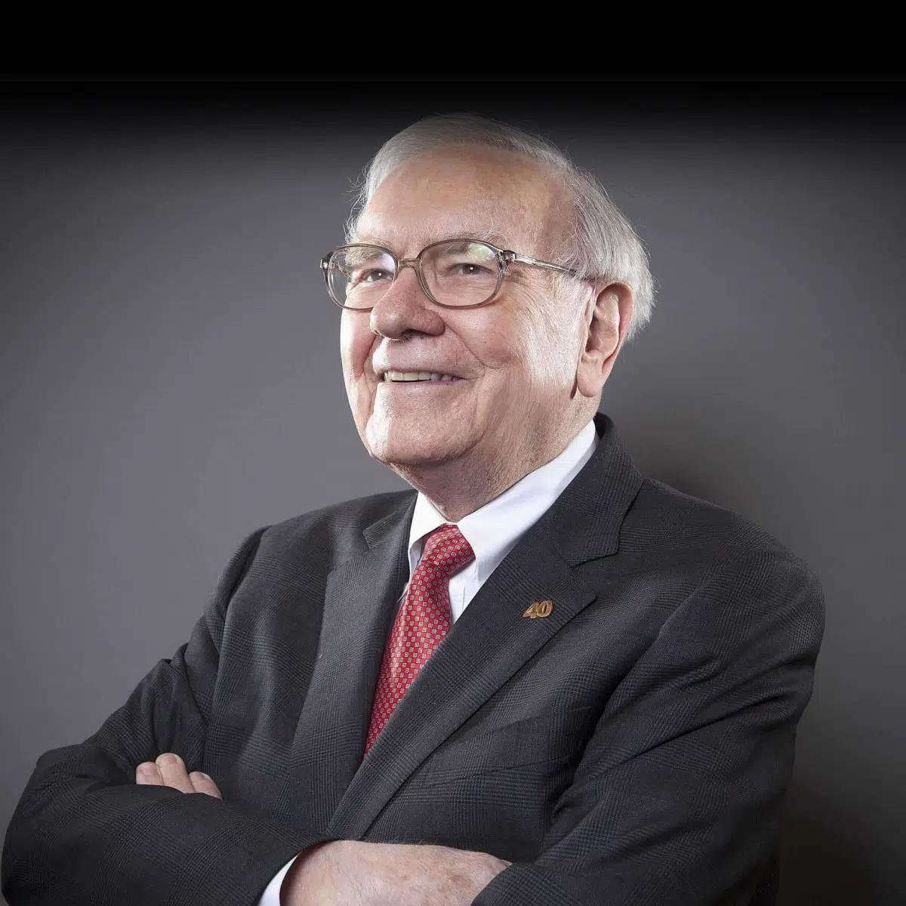

Warren Buffett, born on August 30, 1930, is the chairman and CEO of Berkshire Hathaway, a multinational company. Buffett developed an interest in business and investment while still in his youth and he went on to study the concepts once he got to college. He is known for his immense wealth and his generosity. He is the world’s sixth-richest person.
Warren Buffett
Businessman | investor | philanthropist

About
Known as the "Oracle of Omaha," Warren Buffett is one of the most successful investors of all time.
Buffett runs Berkshire Hathaway, which owns dozens of companies, including insurer Geico, battery maker Duracell and restaurant chain Dairy Queen.
The son of a U.S. congressman, he first bought stock at age 11 and first filed taxes at age 13.
He has promised to donate over 99% of his wealth. So far he has given more than $49 billion, mostly to the Gates Foundation and his kids' foundations.
In 2010, he and Bill Gates launched the Giving Pledge, asking billionaires to commit to donating at least half of their wealth to charitable causes.
“Rational people don't risk what they have and need for what they don't have and don't need.”
Which stocks does Warren Buffett invest in?
The stock portfolio of Berkshire Hathaway is worth hundreds of billions of dollars, and most of the stocks were selected by Buffett himself. Although Berkshire's portfolio holds about 50 different stock positions, almost three-fourths of the portfolio's value is concentrated in just five stocks. Here's more information about each of these top holdings:
1. Apple : The tech giant's stock is the largest holding in the Berkshire Hathaway portfolio by a wide margin. Berkshire owns 5.7% of Apple’s stock, which was worth more than $136 billion as of late 2022. Buffett loves Apple not only for its "sticky" customers -- it's tough to imagine a company with a more loyal customer base -- but also for its pricing power and top-notch leadership.
2. Bank of America : Berkshire owns 12.9% of Bank of America's stock, and it was the company's second-largest stock investment as of late 2022. Buffett is a big fan of Bank of America CEO Brian Moynihan and the rest of the bank's management team. The company’s stock regularly trades for an implied valuation relative to the book value of its assets that is below its big-bank peers. Bank of America is also an excellent dividend stock, prioritizes share buybacks, and has grown at one of the fastest rates in its peer group in recent years.
3. Chevron : The newest addition of the top five, Buffett has been aggressively investing in Chevron in 2022 as oil prices have been elevated. Berkshire now owns 8.4% of the energy giant, a stake valued at about $29 billion in late 2022. Berkshire owns several major energy subsidiaries, so this ties in well with Buffett's affinity for the sector.
4. Coca-Cola : Berkshire is a major investor in the beverage giant, owning 9.2% -- $24 billion at the time of this writing -- of the company's stock. Buffett started accumulating Coca-Cola stock in the late 1980s, and it's been one of his most successful long-term investments. In addition to being a devoted customer, Buffett loves Coca-Cola's brand power and massive distribution network, both of which give it competitive advantages over would-be rivals.
5. American Express : One of Berkshire's largest investments by percentage ownership, the company holds 20.2% of American Express stock -- about $22 billion at the time of this writing. Buffett has held its stock for 30 years. He loves the company's valuable brand name and its role as both a payment network and lender in its transactions.